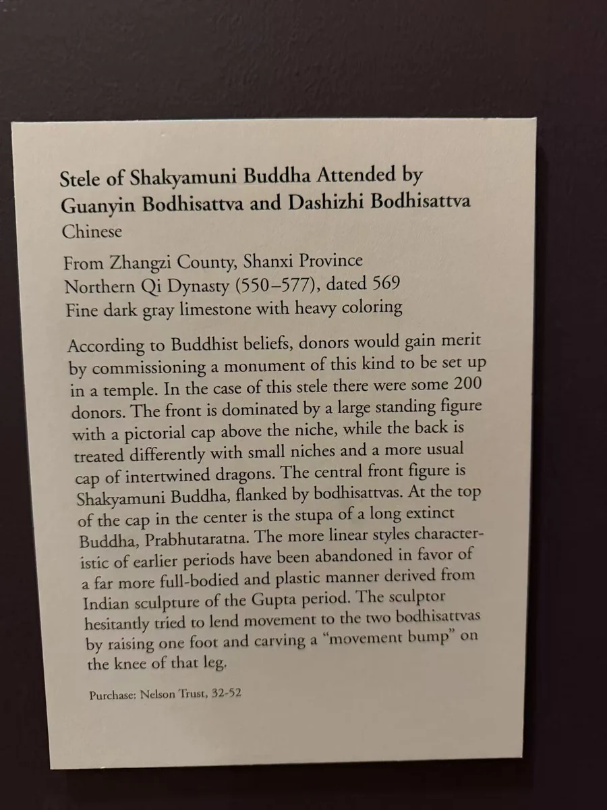

两种身体，同一块碑
立佛一面以长长的衣缘和身体纵线向下延伸；坐佛一面则围绕膝前衣摆、座位和头光聚拢。换到侧面，石碑的厚度与题记的位置显露出来。正、背、侧都不是可以省去的余面。
约二百位参与者
馆方根据铭文说明，僧人道林与约二百位供养人共同营造。馆方题名将正面主尊及胁侍辨认为释迦牟尼、观音与大势至；背面则另有上下两龛坐佛。 [1]
双面的主尊、周围的菩萨和写下的姓名，使礼拜对象与共同出资者同时被记住。残存颜料也提醒我们，今天所见的石色并不是这件碑原有外观的全部。 [1]
IMAGES AND VOWS / 569
一面立佛，一面坐佛。侧面的名字又把这件高大的石刻，连回僧人道林与约二百位参与者。
深灰色石灰岩，残存彩绘｜含座266.7 × 83.82 × 39.37厘米；碑身220.98 × 71.12 × 34.29厘米

立佛一面以长长的衣缘和身体纵线向下延伸；坐佛一面则围绕膝前衣摆、座位和头光聚拢。换到侧面，石碑的厚度与题记的位置显露出来。正、背、侧都不是可以省去的余面。
馆方根据铭文说明，僧人道林与约二百位供养人共同营造。馆方题名将正面主尊及胁侍辨认为释迦牟尼、观音与大势至；背面则另有上下两龛坐佛。 [1]
双面的主尊、周围的菩萨和写下的姓名，使礼拜对象与共同出资者同时被记住。残存颜料也提醒我们，今天所见的石色并不是这件碑原有外观的全部。 [1]
馆方来源记录起于山西长子县，最迟1931年10月已由北京的Celestin Liu持有。1932年经Laurence Sickman与Otto Burchard购入；更早的原寺院与流转细节仍有空缺。 [1]
本页采用馆方对铭文的摘要，未另编道林的生平、邑众名单或未发表的发愿全文。 [1]
作品与现场展签摄影：Merton。铭文按各件所列已刊录文或提供的转录本呈现；白话解读为本站意译。公开资料中的缺字与异文保留在对应作品页。